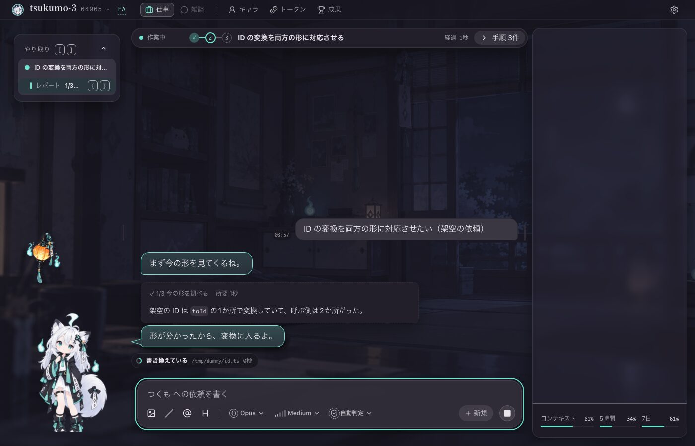
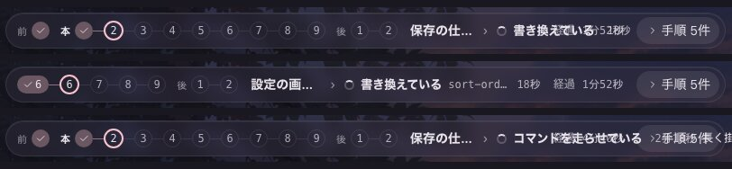
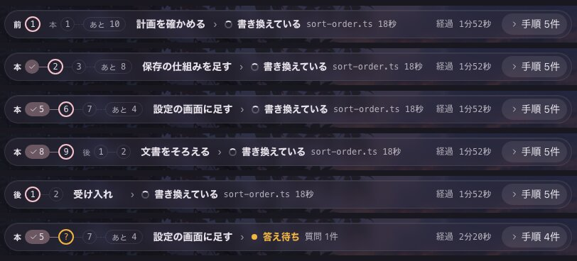
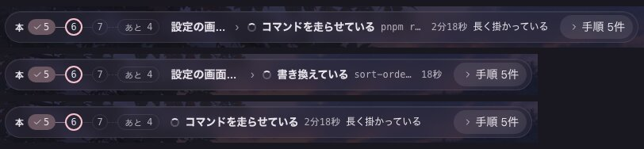

仕事の画面（広い画面）で、走っている手順を言う「いまの行」が最新のセリフと入力欄の間に挟まり、進み具合の帯とは画面の上と下に分かれている。2026-11-18 の今の形と、3つのまとめ方を同じ架空のやり取りで並べた。どの案も、いまの行を流れから出して進み具合と同じ所に置き、セリフと入力欄の間には何も挟まない。
今の画面を疑似セッションで撮り、位置を測った。独立のレビュー役にも同じ画面を見てもらい、課題を洗ってもらった（案は渡していない）。

3案とも、位置（フェーズの丸と今のフェーズの名前）と走っている手順を「›」でつなぎ、手順がそのフェーズの中の一歩だと読めるようにした。作業中は回る印と動詞が状態の札の代わりをし、答え待ち・完了のときだけ札を出す。違うのは置き場だけ。数は見本の働く場面（1400×900）で測った。
| 今の形 | 案A 帯にまとめる | 案B 入力欄の頭にまとめる | 案C 立ち絵の手元にまとめる | |
|---|---|---|---|---|
| 置き場 | 位置は上端の帯、手順は流れの末尾 | 上端の帯の1行 | 入力欄の枠の中の、頭の1行 | 立ち絵の頭の上の札（左の列） |
| 位置と手順の距離 | 縦 635px（815px） | 同じ行 | 同じ行 | 同じ札の中（縦 54px） |
| 最新のセリフと手順の距離 | 縦 58px（すぐ下に挟まる） | 縦 631px（801px） | 縦 87px（入力欄の頭） | 横 約 420px。立ち絵の顔の約 85px 上 |
| セリフと入力欄の間の物 | 1つ（いまの行） | 無し | 無し（入力欄の枠の中） | 無し |
| 流れの高さ | 631px（811px） | 631px（811px） | 621px（801px） | 667px（847px） |
| 上へ送って読み返すとき | 手順が見えない | 見える | 見える | 見える |
| 中くらいの幅（1000px） | 帯の名前が縮む | 名前と対象が縮む | 名前と経過を省く（丸と手順だけ） | 変わらない（左の列の幅は 238px のまま） |
| 答え待ちの知らせ | 入力欄の上の帯 | 入力欄の上の帯 | 同じ1行に入る（帯が要らない） | 入力欄の上の帯 |
| 「手順」の一覧が開く所 | 帯の真下 | 帯の真下 | 入力欄の真上 | 札の右（流れの上に重なる） |
| 改める決まり | — | ADR 0059 論点 1・2（帯は位置だけ・回る印は末尾の行だけ） | 左に加えて ADR 0058 の帯の置き場、0059 論点 3・5、0062 論点 13（流れは帯の下から） | 左に加えて ADR 0058 の帯の置き場と左の列の中身、0059 論点 3、0062 論点 13 |
どの案も、回る印をぼかしの面（帯・入力欄・札）の中へ戻す。ADR 0058 論点 9 は面の中の回る印を steps() にすれば許しているが、負荷の上限（止まった画面で、ぼかしを外した版と CPU が 2 倍以内）は実装の前に測り直す。
見本の働く場面の下端を、等倍で切り出した。今の形は、明るいセリフ・いまの行・入力欄の三段で、左端が揃わない。
フェーズ 2/4 で、ファイルを書き換えている。最新のセリフは明るく、尾は立ち絵の顔を指す（今の画面と同じ）。
回る印を遅くして「長く掛かっている」を添える規則は今のまま。今は帯に何も出ないので、上だけを見ていると止まって見えるかが分からない。案A〜C は、位置と同じ所に出る。
働く（後半）で、流れを上端まで送った。今の形はいまの行が流れと一緒に画面の外へ出る。
今の形は、帯の札「背景で作業中」といまの行「背景で 委譲先に任せている」が、同じ「背景で」を2か所で言う。案A〜C は札を出さず、手順の行だけが言う。
お伺いのカードは流れの末尾のまま。今の形と案A・C は入力欄の上に知らせの帯が出る。案B は知らせが入力欄の頭の1行に入り、積む物が1つ減る。
手順が無くなるので、どの案も今の形と同じく状態の札（完了）を頭に置く。
一覧は、押した口の隣から開く。今の形と案A は帯の真下、案B は入力欄の真上、案C は札の右。
12フェーズ（前1・本9・後2）の計画を、1400 の幅で帯だけ切り出した。丸の番号は群ごとに1から数える（今の帯と同じ）。見本の index.html?form=a&many=fold|window&at=1〜12 で位置を替えて開ける。



レビュー役が見つけた食い違いと、まだ埋まっていない場面。置き場の案とは別に、1つずつ選べる。
turn-interrupted）はもうあるので、帯と列の印もそこから導く。不具合・案を問わない働くあいだ、流れは入力欄の側へ寄せて描き、新しいセリフも入力欄のすぐ上に届く。目はほとんど下端に居るので、位置と手順を同じ下端の1行に置くと、セリフから 87px で読める（案A は 631px）。止める口と同じ枠の中なので、何を止めるのかが隣に書いてある。答え待ちの知らせも同じ1行に入り、入力欄の上に積む物が1つ減る。帯が無くなるので、流れと紙は列の上端から始まる。
弱いところは3つ。入力欄が 43px 高くなり、流れは 10px 減る。中くらいの幅では今のフェーズの名前と経過を省く。差し色の縁の中に状態が入るので、書く所と読む所を区切る線の見え方を実物で確かめる要がある。
案C は、キャラクターと一緒に働く感じを強く出したいときの案。幅に強く（中くらいの幅でも同じ形）、流れがいちばん高い。そのかわり、札は 214px の幅に縦に積むので読む字が増え、一覧は流れの上に重なり、札の位置はパックの顔の位置（faceAt）に頼る。立ち絵の頭の上の札が吹き出しに見えないかも確かめる要がある。案A は変える量がいちばん小さいが、最新のセリフと手順が 631px 離れ、下で起きたことを上で読む往復が残る。